Fraktálok
Idáig a virtuális (euklideszi, gömbi, hiperbolikus) világunkat "simának" (tökéletes sík, egyenes) tekintettük, ez kicsiben is tökéletesen differenciálható
A természetben viszont aligha találkozhatunk ilyen ideális görbékkel, felületekkel, testekkel, belenagyítva minden érdes, tökéletlen, nem lineáris, nem differenciálható.
Koch görbe
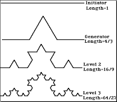
- adott iteráció hossza: \(l_n = l_0 \bigg(\cfrac{4}{3}\bigg)^n \to \infin\)
- véges tartományban végtelen hosszú \(\Rightarrow \text{Dimenzió} > 1\)
- területe zérus \(\Rightarrow \text{Dimenzió} < 2\)
- folytonos
- sehol sem differenciálható (tüskés, sehol sem sima eléggé)
- önhasonló = le lehet fedni a saját kicsinyített változatával
Hausdorff dimenzió önhasonló objektumokra
- vegyünk egy kiindulási alakzatot
- erre \(r\)-szeres kicsinyítést alkalmazunk (mérete \(\frac 1 r\)-szeres lesz)
- majd fedjük le a tartományt \(N\) db ilyen kicsivel
- ezt végtelenszer ismételjük
-
ha kész vagyunk, akkor a Hausdorff dimenziója \(D\), ahol
\(N = 1/r^D \quad \Rightarrow \quad D = \frac{\log{N}}{\log(1/r)}\)
-
pl. a fenti Koch görbe esetén \(1/3\) méretűre kicsinyítettük a kiindulási szakaszt, és \(4\)-szer fedtük le vele a tartományt, tehát \(D = \frac{\log 4}{\log 3} \approx 1.26\)
Nem önhasonló objektumok: vonalzó dimenzió
Önhasonló objektumokra 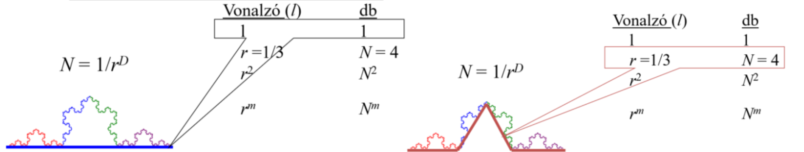
\(D = \cfrac{\log(\text{Hossz}(l))}{\log(l)} + 1\)
(tippre \(l\) a vonalzó egység hossza, \(\text{Hossz}(l)\) a teljes hossz azaz \(l \cdot db\))
Alkalmazása: természetes objektumok elkülönítése és kategorizálása 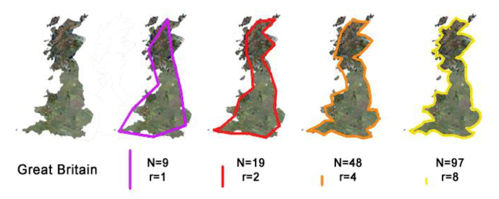
Lindenmayer rendszerek
hogyan állítjuk elő ezeket?
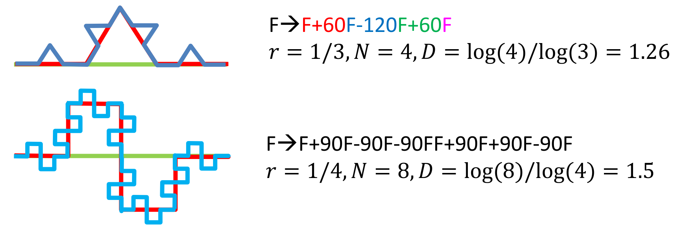
Odaképzeljük az elejére a comlogós teknőcöt, és készítünk egy előre (F) függvényt, ami rekurzívan hívja meg saját magát, majd fordulgat stb.
nyilván valami mélységet beállítasz neki, mert a matematikai végtelen valóságos stackoverflowhoz tud vezetni


Fraktális zaj

- perturbációk generálása véletlenszerűen
- ezek szórását a finomabb szintek felé csökkentsük
- gyyorsan csökken \(\Rightarrow\) sima görbe
- lassan csökken \(\Rightarrow\) rücskösebb görbe
Perlin zaj
felhők, hegyek, minecraft világ generáláshoz
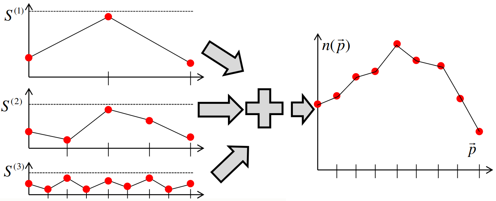
- több skálán állítjuk elő a jelet
- egyre kisebb szinteken egyre kisebb értékkészletből, de egyre több mintapontot generálunk
- ezeket összeadva kapunk egy zajos tartományt
ÉK gyorsan csökken \(\Rightarrow\) sima ÉK lassan csökken \(\Rightarrow\) rücskös
Káosz
Nyulak szigete
És nem, nem ússzuk meg a Margit-szigettel. Itt a populáció modellre kell gondolni.
\(x_{n+1}=Cx_n(x_{max}x_n)\)
ahol
- \(x_n\): populáció az n-edik lépésben
- \(C\): szaporodási ráta (együttható)
- \(x_max\): maximális populáció (amit a környezet elbír)
különbőző \(C\) esetek:
- \(C\) kicsi: 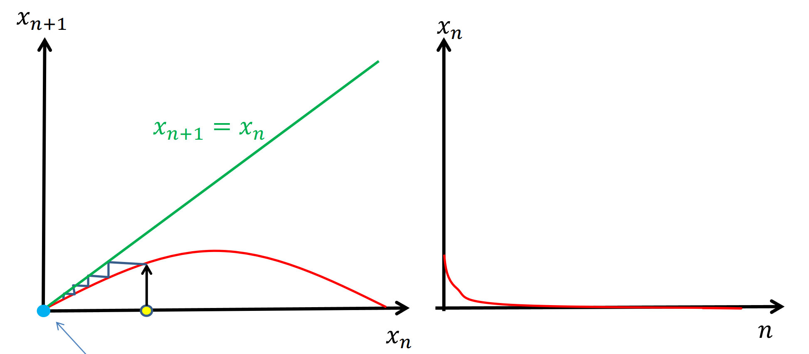
- \(C\) közepes: 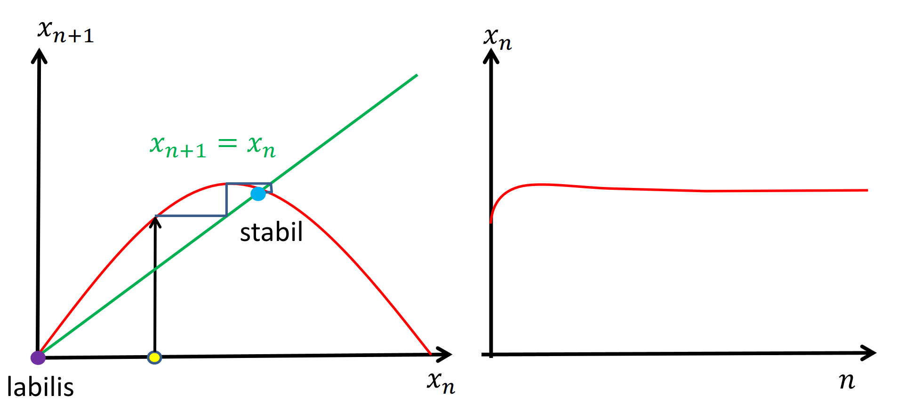
- \(C\) nagy: 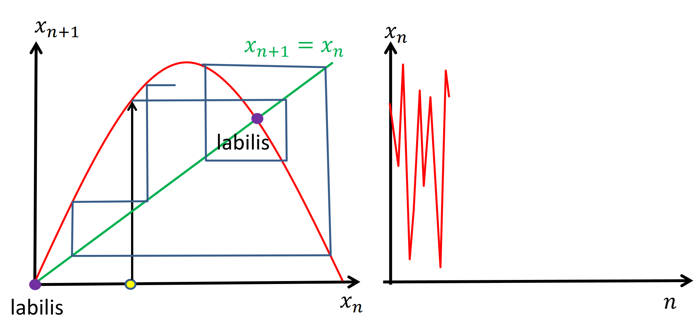
Iterált függvények, fix pontok
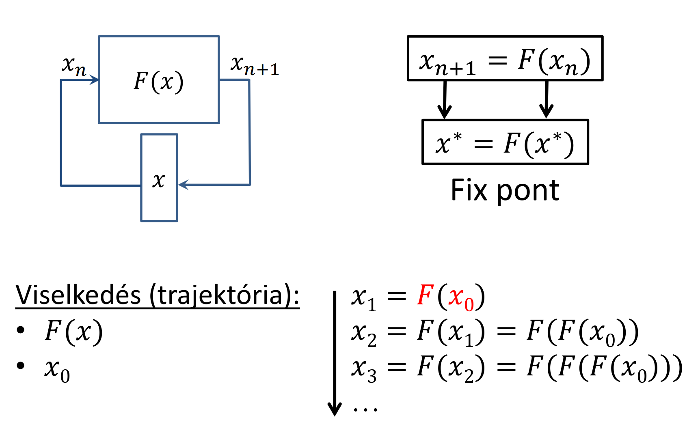
Volt ilyen analízisből, mindenki tudja és szereti. Annyiból áll, hogy \(x_{n+1}\)-et (a következő elemet) adjuk meg \(x_n\) (az előző elem) függvényében.
Fix pont
- azon \(x^*\)-ok, amit ha odaadunk a függvénynek önmagát kapjuk vissza (fix)
- matematikailag ez annyit tesz, hogy \(x^* = F(x^*)\) (képe önmaga)
- fix pont viszont lehet stabil és labilis is:

- tehát azaz vagyis akkor tekintjük stabilnak, ha \(|F'(x^*)| < 1\)
Káosz
-
maga a rendszer teljesen determinisztikus (két ugyan arra a bemenetre mindig ugyan azt kapom vissza) de mégsem tudom megjósolni a működést, mert bármilyen kis változtatás a kezdeti állapoton teljesen más eredményt ad vissza
megint jó példa a minecraft, gondoljunk csak a seedre: - kétszer ugyan azzal a seeddel generált világ teljesen ugyan az lesz - ha már csak egy számjegyet is változtatok rajta, a két világ közti különbség ég és föld
-
kis perturbáció nagyon eltérő viselkedéshez vezet
- ha a perturbáció a 0-hoz tart akkor se lesz ugyanaz
-
autokorrelációs függvény a nullához tart, tehát a kezdőérték nem befolyásolja, hogy később hogy fog működni
-
"megjósolhatatlanság"
- teljesítmény sűrűség spektrum nem lehet sávkorlátozott / nem tart zérushoz \(\to\) nagy frekvencia lehet (jelentsen ez akármit is)
Pszeudó véletlenszám generátor
static uint x = 3;
void seed(uint s) { x = s; }
uint rand( )
{
x = F(x);
return x;
}
\(x_{n+1} = F(x_n)\) és
\(|F'(x)| > 1\) nagy és állandó
pl. legyen
\(F(x) = \{g \cdot x + c\}\quad\) (\(\{\}\) a törtrészt jelenti)
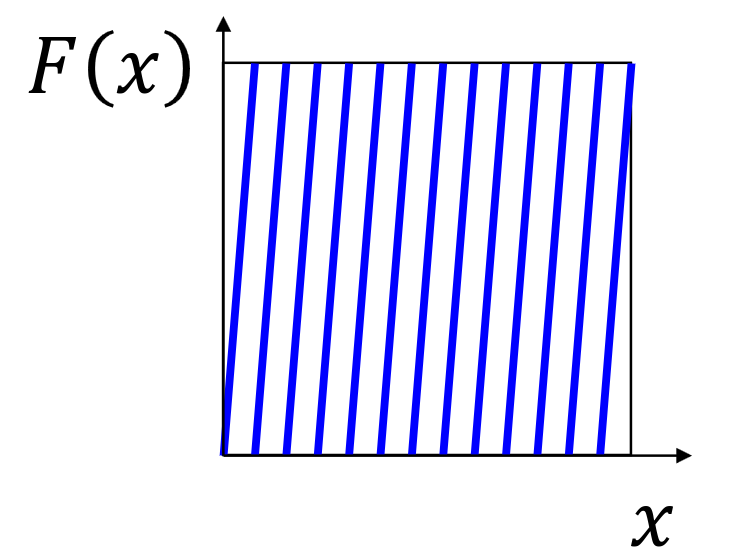
ez viszont viszonlag determinisztikus, biztonsági okokból nem kimondottan a legmegfelelőbb
Kaotikus rendszerek a síkon
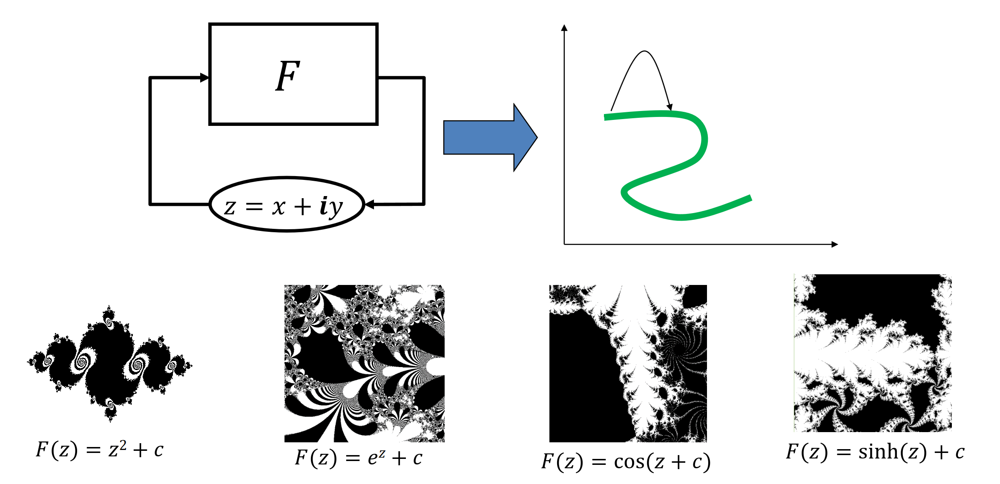
- azt szeretnénk, hogy egy pontsorozatot adjon, ami kirajzol valamit
- pont a 2D síkon
- komplex szám
- \(x, y\) számpár
mi legyen \(F\)?
pl. \(F: z \mapsto z^2\)
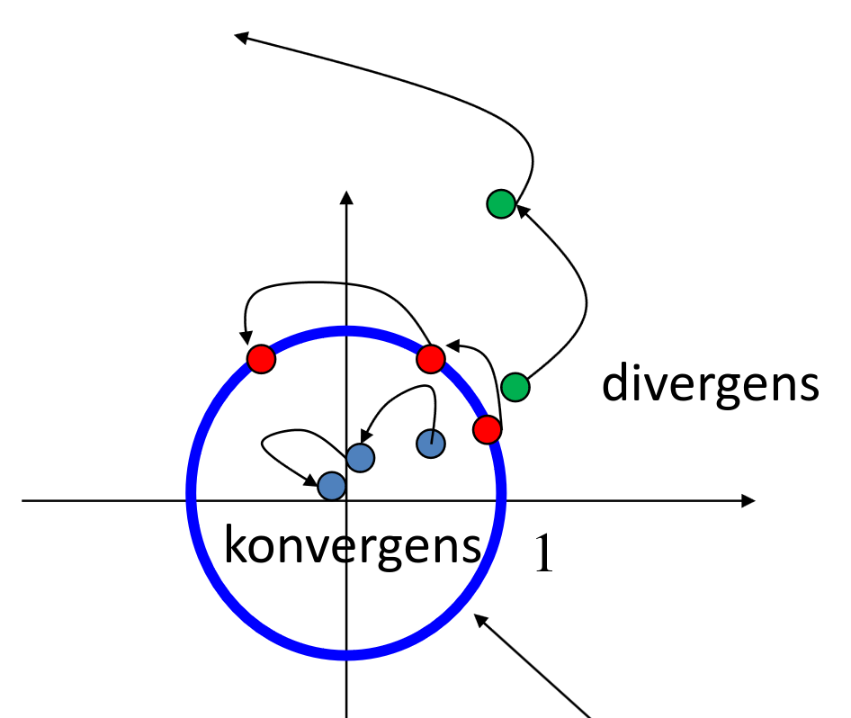
-
komplex szám abszolút értéke szerint 3 csoportra osztható
- $|z| = 1 $: 1 marad a távolsága az origótól, körülötte forog
- $|z| < 1 $: csökken a távolsága az origótól, spirális pályán konvergál felé
- $|z| > 1 $: nő a távolsága az origótól, spirális pályán divergál
-
a kör szétválasztja a stabil és instabil tartományokat
- a kör maga egy (ugyan labilis de) attraktor
- \(\approx\) bármely pontjára nézve \(F\) függvény eredménye szintén egy pontja lesz \(F(H) = H\)
azért labilis, mert ha ettől egy picit is eltérünk akkor "elvisz a fenébe"
Attraktor felrajzolása
- attraktor a divergens (labilis) és konvergens (stabil) határa
- \(\Rightarrow\) kitöltött attraktor = nem divergens pontok (magyarán ami belül és rajta van)
- \(z_{n+1} = z_n^2\): ha \(|z_\infin| < \infin\) (azaz nem divergens) akkor fekete
- iterálunk a pontokon és megnézzük merre mennek, színezünk
- ha az attraktorhoz konvergálunk \(\to\) attraktor stabil
- labilis attraktorhoz soha nem konvergálunk
- pl: \(z_{n+1} = z_n^2\) attraktora labilis (nem a körvonalhoz konvergálunk hanem a középpontjához)
Inverz iterációs módszer
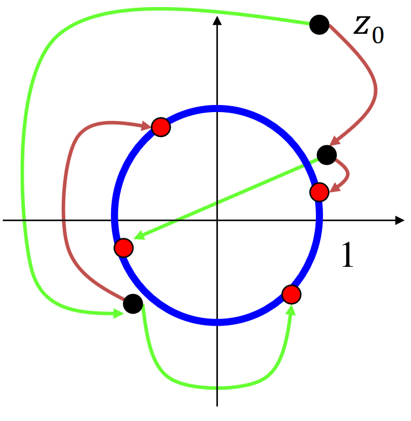
\(H=F(H) \Rightarrow H=F^{-1}(H)\)
\(z_{n+1} = z_n^2 ~~\Rightarrow z_{n+1} = \pm \sqrt{z_n}\)
\(r_{n+1} = \sqrt{r_n}\)
\(\varphi_{n+1} = \varphi_n/2 + \pi\{0|1\}\) (azaz \(\pi ~\cdot\) vagy \(0\) vagy \(1\), mert 2 gyök van)
Midőn \(n \to \infin\):
\(r_{n} = \sqrt[2^n]{r_0} \to 1\)
azaz vagyis tehát a körön lesz előbb vagy utóbb de leginkább csak közelíti
- függvény attraktora (ha van neki) megegyezik az inverzével, de stabilitása ellentétes lesz (stabil \(\rightleftarrows\) labilis)
- \(z^2\)-nél távolabb visz (labilis), inverzénél (\(\sqrt{z_n}\)) közelebb visz (stabil) az iteráció az attraktorhoz
Többértékű leképzés: bolyongás
- \(\varphi_{n+1} = \varphi_n/2 + \pi\{0|1\}\)
azaz
- a pozitív gyök esetén \(\varphi \to 0\)
- a negatív gyök esetén \(\varphi \to 1\)
- ha mindig csak egy irányba megyünk az nem lesz jó, véletlenszerűen bolyongunk benne
Julia halmaz
\(F: z \mapsto z^2 + c\) Kölönböző \(c\)-k esetén: 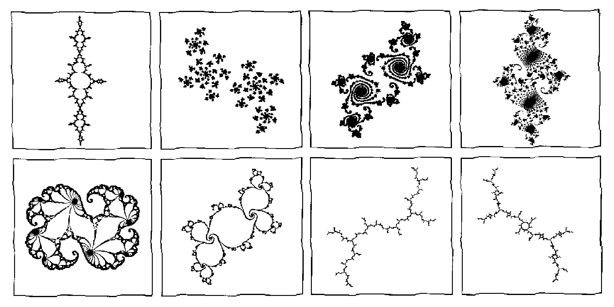
Implementáció
2 féle megközelítés:
- "gyökvezérelt": számoljuk a gyököket egy bizonyos mélységig, és az érintett pixeleket átszínezzük
- pixelvezérelt: minden pixelre a függvény inverzén iterálunk, az alapján színezünk (elég gettó megfogalmazás de nekem ez jött át, kódot nem kaptok :P)
Mandelbrot halmaz
Azon c komplex számok, amelyekre a \(z \mapsto z^2 + c\) Julia halmaza összefüggő.
Egy videó, ami ugyan kicsit szájbarágósan de szerintem élvezhetően elmagyarázza a komplex számokat és a Mandelbrot halmazt: The Mandelbrot Set (Vsauce)
Isten létezésének bizonyítása a Mandelbrot halmazzal (ennek mégkevesebb köze van az anyaghoz): Proving God exists using Math
A 3D változata Mandelbulb néven ismert.
ISF
ISF = Iterált Funkciós Rendszer
Inverz feladat
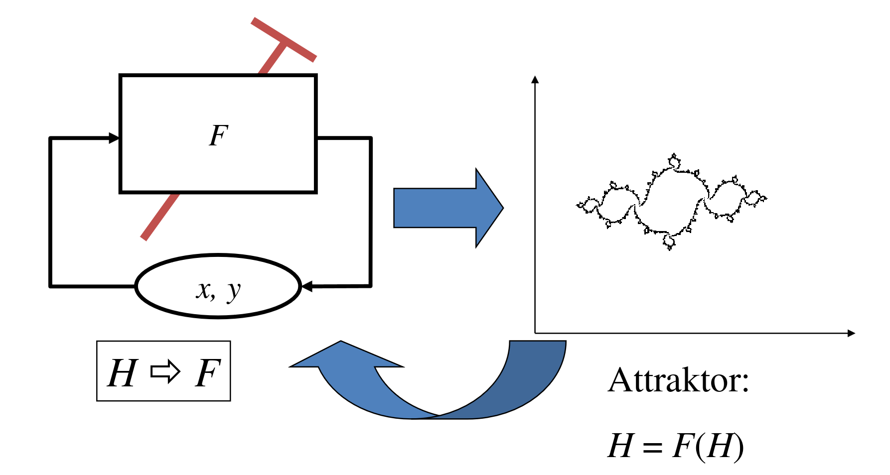
Inverz feladat, tehát \(H\) ismert és \(F\)-et szeretnénk.
\(F\) szabadon vezérelt, legyen stabil attraktora:
\(H = F(H) = W_1(H) \cup W_2(H) \cup W_3(H) \cup W_4(H)\)
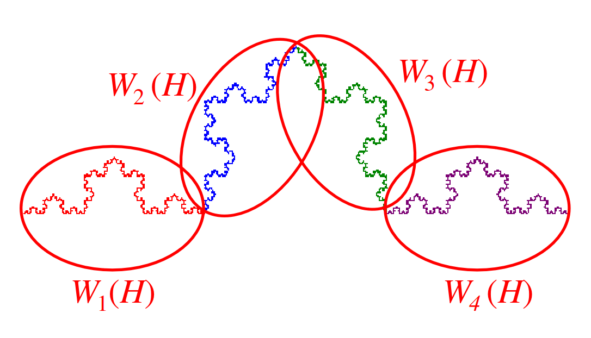
\(\boxed{W_k (x,y) = [x,y]\cdot A_k + q}\)
Ez egyet pont lineáris transzformációját és eltolását határozza meg.
\(F = W_1 \vee W_2 \vee ... \vee W_m\)
Nem feltétlenül hasonlósági transzformáció!
Nem csak önhasonló objektumokhoz használjuk.

Kvíz
1. Jelölje ki azon komplex számokat, amelyeket a Mandelbrot halmaz tartalmaz.
Megoldás:
"Azon c komplex számok, amelyekre a \(z \to z^2 + c\) Julia halmaza összefüggő." Azaz ahol \(z \to z^2 + c\) nem divergál.
- -1+i \(z_1 = -1+i\) \(z_2 = 1 -2i +i^2 + (-1+i) = -1-i\) \(z_3 = 1 +2i +i^2 + (-1+i) = -1+3i\) \(\vdots\quad\) belátjuk hogy elszáll
- -1 \(z_1 = -1\) \(z_2 = 1 - 1 = 0\) \(z_3 = 0 - 1 = -1\) \(\vdots\quad\) innen már oszcillál
a többi példa gyakorlásnak:
- 1
- 0
- i
- -i
2. Az \(F(z)=e^z + c\) függvényt iteráljuk, ahol a kezdeti állapot \(z_0=\frac{\ln(2)}{2} + {i}\frac{\pi}{4}\) és \(c=-1-i\). Mennyi az első iteráció után az állapot valós része?
Megoldás:
\(z_1 = e^{\frac{\ln(2)}{2}} \cdot e^{i\frac{\pi}{4}} -1 -i\)
\(z_1 = \sqrt2 (\cos(\frac \pi 4)+ i \sin(\frac \pi 4)) -1 -i\)
\(z_1 = \sqrt2 \cdot \frac{\sqrt 2}2 (1+ i) -1 -i = 0\)
4. Mekkora a Hausdorff dimenziója az alábbi L-rendszer által definiált alakzatnak: F -> FFFFFFFFF
Megoldás:
Elképzeljük magunk előtt a teknőcöt, csak egyenesen megyünk, az eredmény egy 9 részből álló egyenes szakasz. Tehát ha nem ugrik be egyből, hogy ez \(1\) dimenziós, akkor itt van levezetve:
\(D = \cfrac{\log{N}}{\log(1/r)} = \cfrac{\log 9}{\log{\frac 1 {\frac 1 9}}} = 1\)
5. Mekkora a Hausdorff dimenziója az alábbi L-rendszer által definiált alakzatnak: F -> -90F+90F+90FF-90F-90FF+90F+90F
Megoldás: Érdemes lerajzolni, szép négyszögjelféleség. A szakaszok hossza az egész kiterjedésnek \(\frac 1 3\)-a, és \(9\) szakaszunk (ahogy 9 F betű is) van.
\(D = \cfrac{\log{N}}{\log(1/r)} = \cfrac{\log 9}{\log 3} = 2\)
6. Nagy Britannia partvidékének hosszát megmérve 256 km-es vonalzóval, a hossz 2048 km-re adódott. Amikor megismételtük a mérést 128 km-es vonalzóval, akkor eredményül 2560 km-t kaptunk. Mekkora a partvidék vonalzó dimenziója?
Megoldás:
\(r = \frac{128}{256}\)
\(N = \frac{20}{8}\)
\(D = \cfrac{\log{N}}{\log(1/r)} = 1.32\)
:neptunfej:
7. Tekintsük az alábbi iterált függvényt: $ F(x)=2x(1-x) $. Mekkora a függvény legnagyobb fixpontjának az értéke?
Az \(x = 2x(1-x)\) helyen.
\(x = 2x - 2x^2\)
\(0 = 2x^2 - x\)
\(x_1 = 0\)
\(x_2 = \frac 1 2\), tehát a válasz \(0.5\)
8. Tekintsük az alábbi iterált függvényt: $ F(x)=Cx(1-x) $. Legalább mekkorának kell lennie a C faktornak, hogy az iteráció ne legyen konvergens?
A stabil pontok:
\(x = Cx(1-x)\)
\(x_1 = 0\)
\(x_2 = \frac{C-1}{C}\)
\(x_0\) pont akkor stabil, ha \(|F'(x_0)| < 1\)
\(F'(x) = C(1-2x)\)
\(F'(x_1) = C\), tehát \(|C| < 1\)
és
\(F'(x) = C(1-2x)\)
\(F'(x_2) = -C + 2\), tehát \(|-C+2| < 1\) azaz \(1 < C < 3\) vagyis a válasz a \(3\)
9. Adja meg az alábbi Sierpinski szőnyeg Hausdorff dimenzióját: 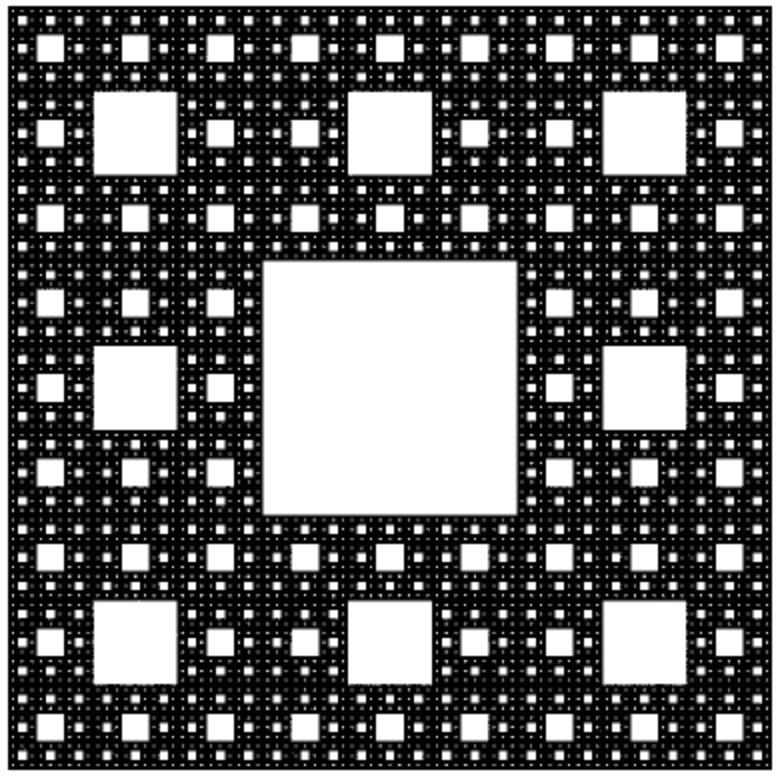
\(r = \frac 1 3, N=8\)
\(D = \cfrac{\log 8}{log 3} = 1.89\)
10. Mekkora a Hausdoff dimenziója az alábbi alakzatnak (két értékes jegyre):

\(r = \frac 1 2, N=3\)
\(D = \cfrac{\log 3}{log 2} = 1.58\)